Situation
A user reported that they were not receiving any notifications on their mobile device from Slack, causing them to miss important team communications and impacting their workflow.
The issue had started recently, making it unclear whether the cause was:
- App misconfiguration
- Device-level restrictions
- Or a temporary system setting
Task
My responsibility was to:
- Diagnose the root cause of the notification failure.
- Guide the user through troubleshooting in a clear, non-technical way
- Restore real-time notifications as quickly as possible.
- Maintain a calm, professional, and empathetic support experience.
Action
To efficiently resolve the issue, I applied a structured troubleshooting approach:
- Clarified the problem scope:
- Identified device type (Android)
- Confirmed notifications were completely inactive (not partial)
- Established timeline (issue started recently)
- Narrowed down potential causes:
- Verified Slack notification settings were correctly configured
- Confirmed the user was in the correct workspace
- Eliminated common issues like misconfigured notification preferences
- Used guided troubleshooting instead of assumptions: Directed the user to Slack’s built-in “Troubleshoot Notifications” tool. This reduced guesswork and surfaced system-level insights quickly
- Identified the root cause: Discovered notifications were paused (Do Not Disturb mode) without the user realizing.
- Delivered a clear resolution path:
- Provided simple step-by-step instructions to resume notifications
- Ensured the user understood what caused the issue to prevent recurrence
Result
- Notifications were successfully restored in real time
- User immediately began receiving missed messages
- Prevented further communication breakdown within the user’s team
- Reduced frustration and restored confidence in the platform
Live Support Conversation
Below is a real support interaction handled using a live chat tool (HubSpot).
This showcases my ability to manage customer urgency, communicate clearly,
and resolve issues efficiently in a real environment.
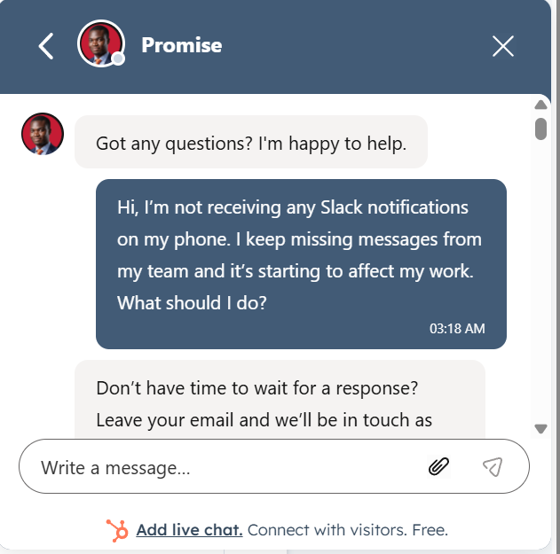
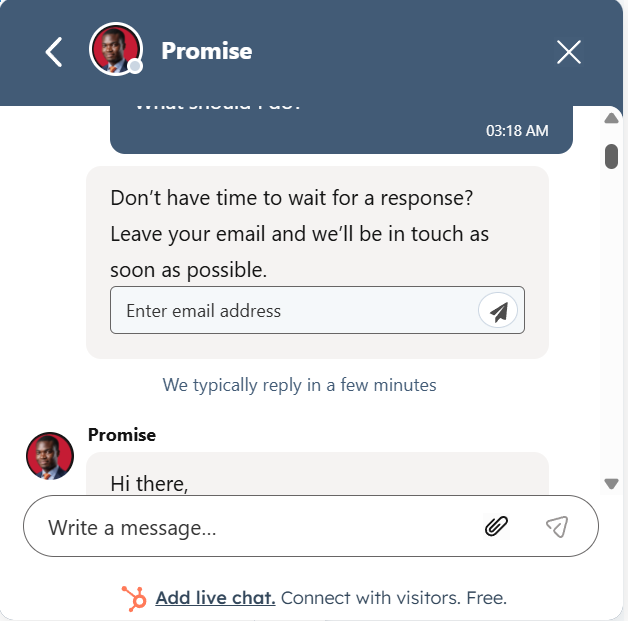
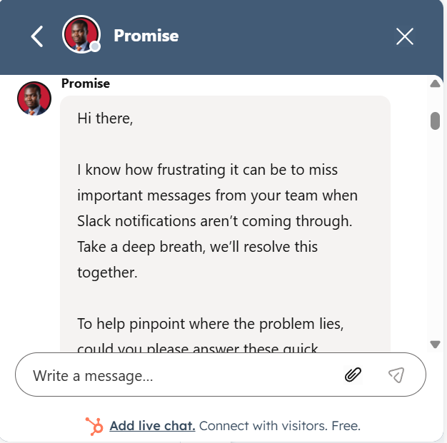
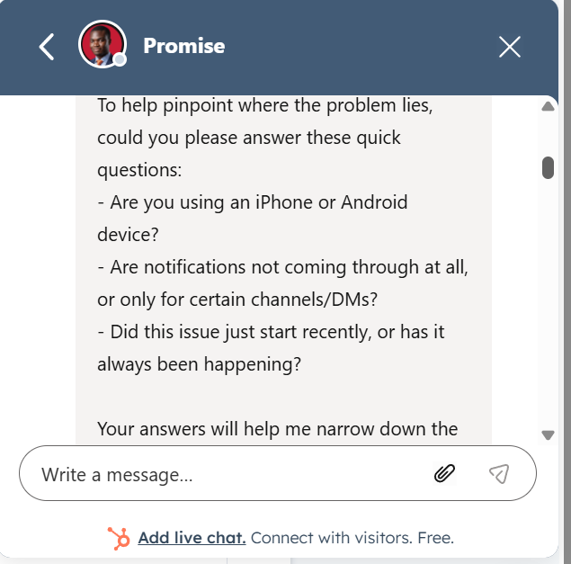
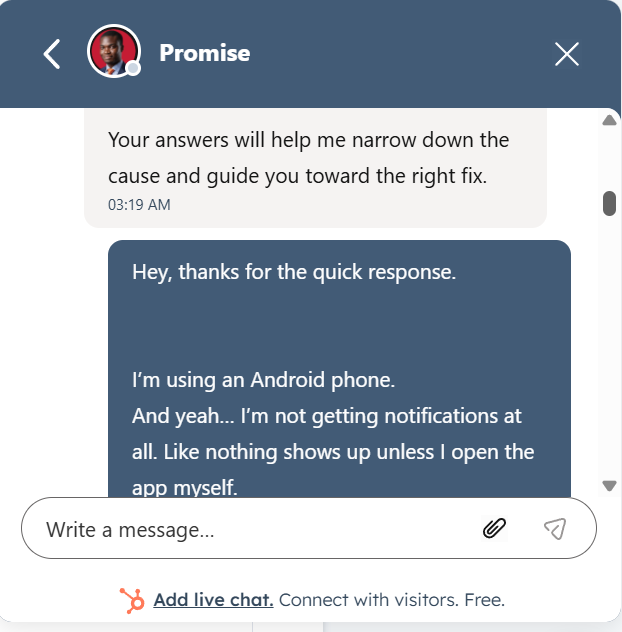
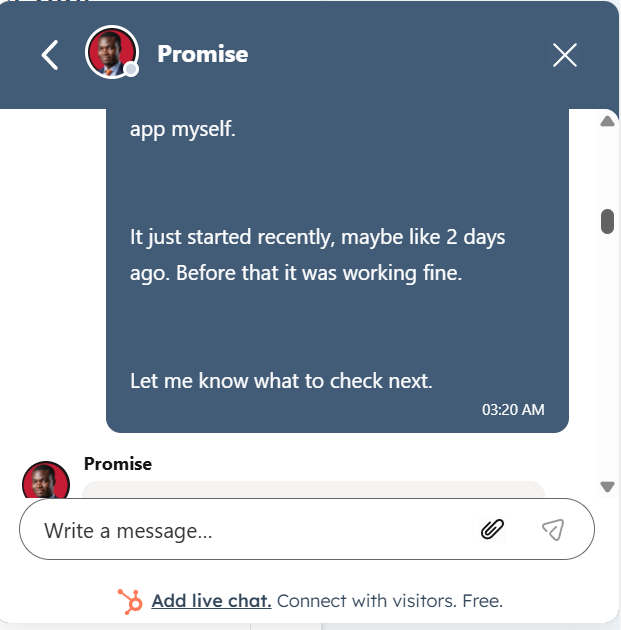
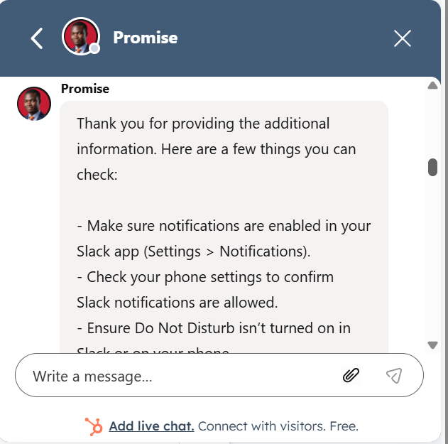
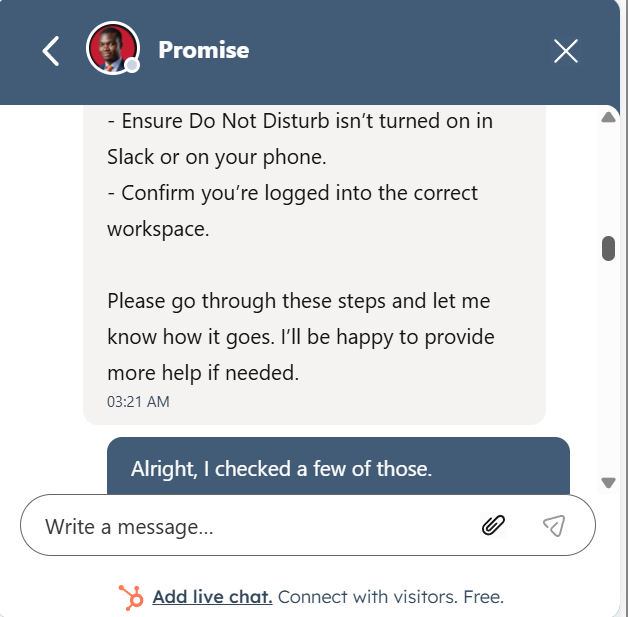
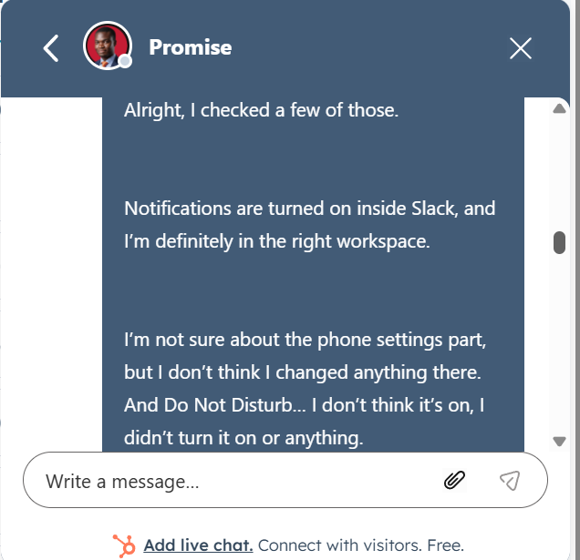
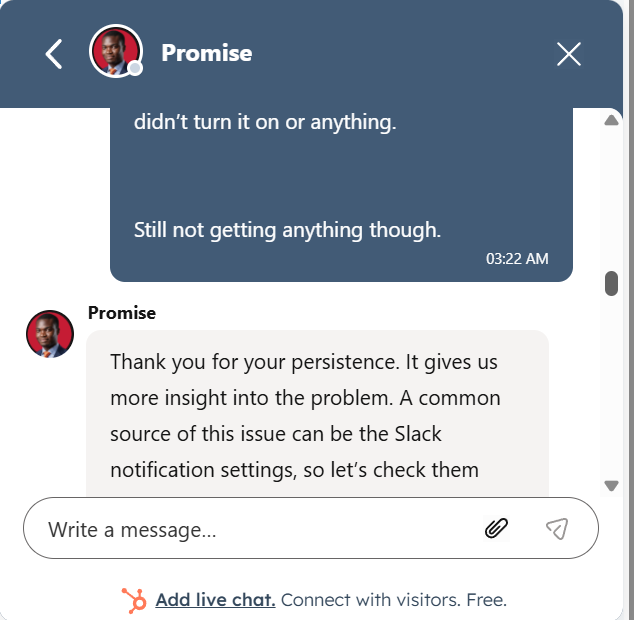
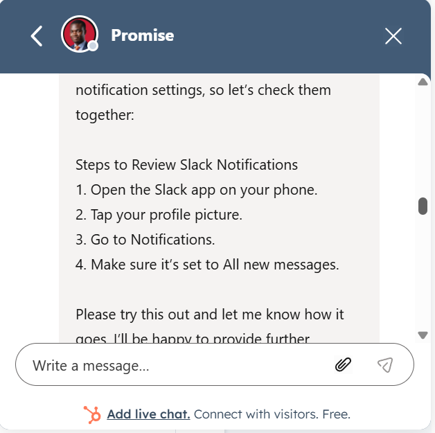
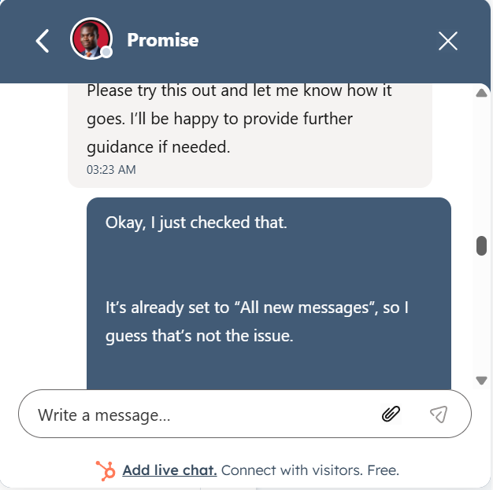
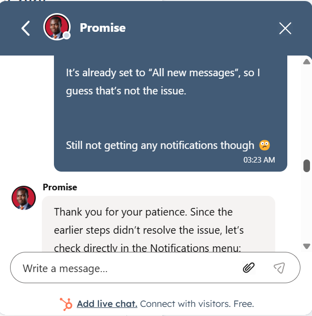
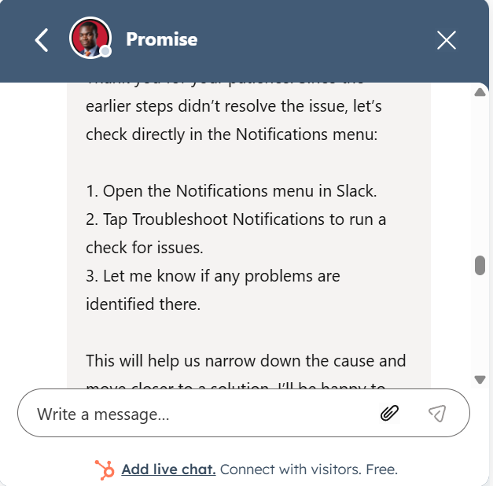
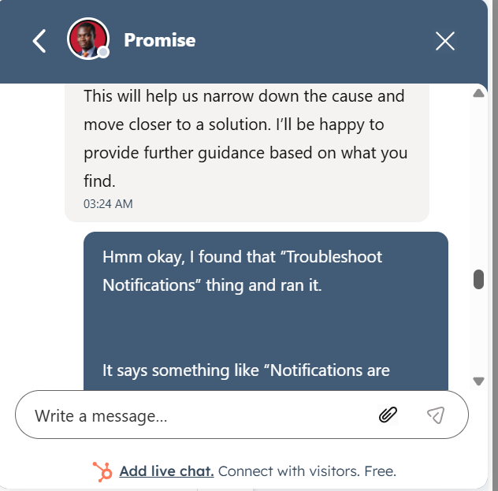
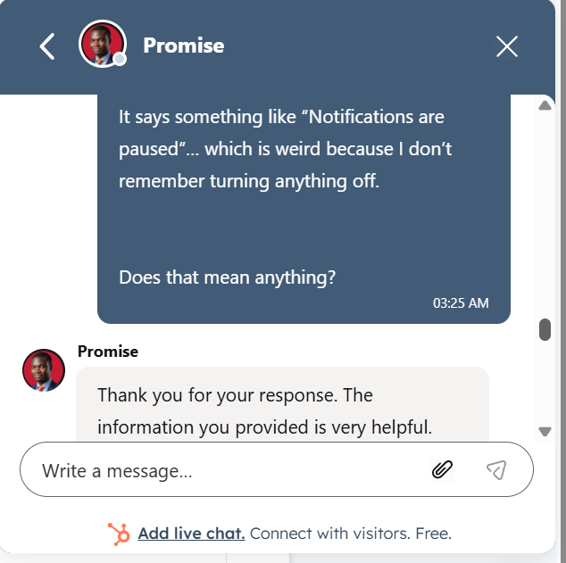
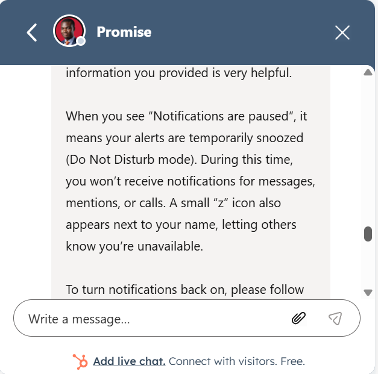
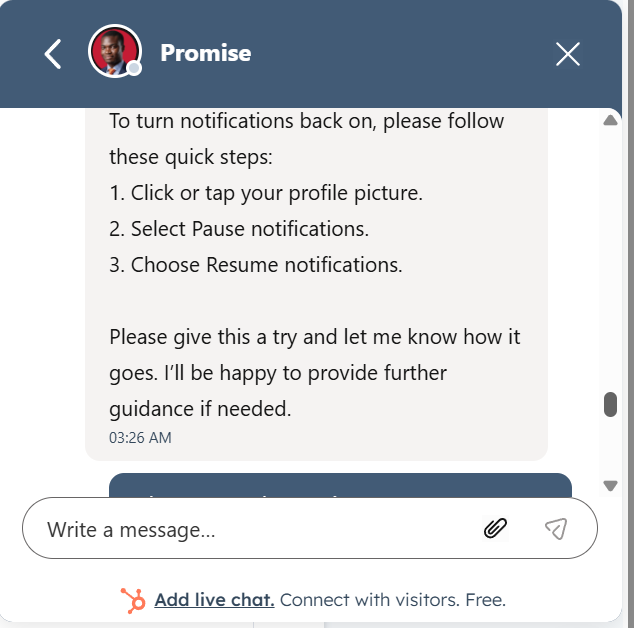
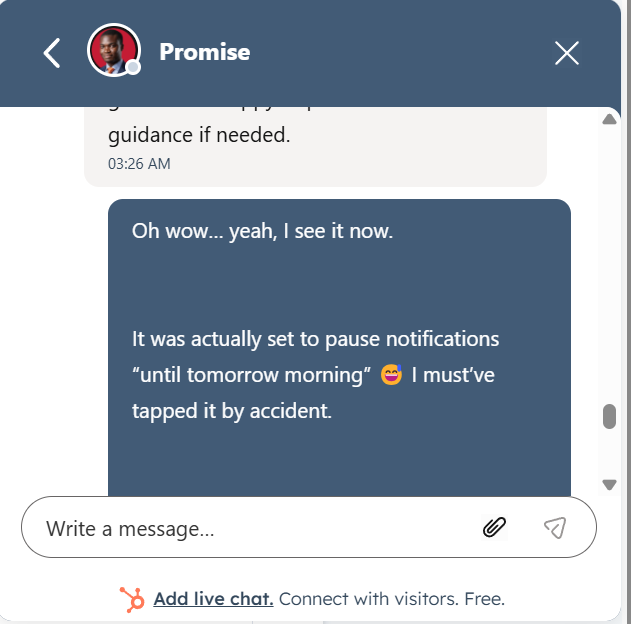
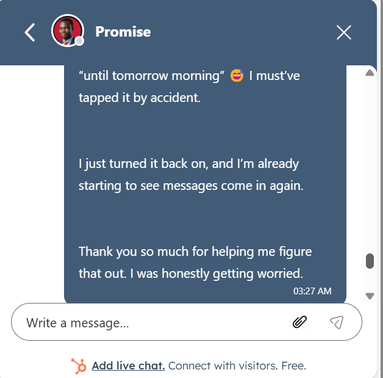
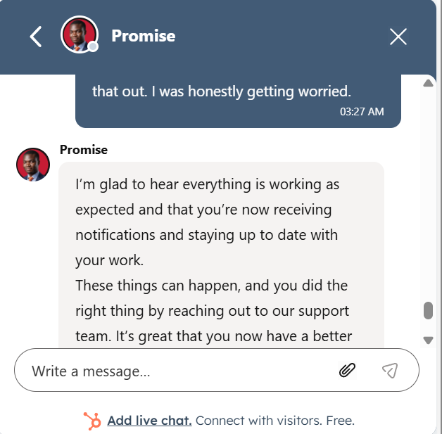
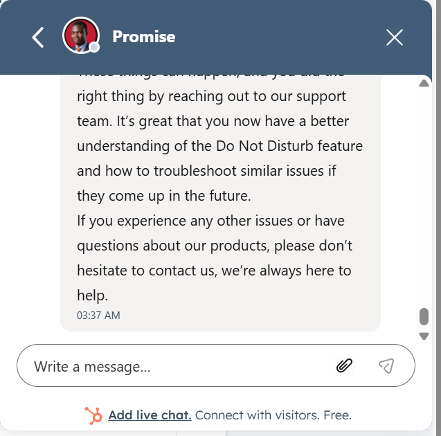
Customer Outcome
The user expressed relief and appreciation after resolving what initially felt like a critical issue affecting their work.
Key Skills Demonstrated
- SaaS Customer Support (Slack)
- Troubleshooting & Root Cause Analysis
- Customer Communication & Empathy
- Guided Problem Solving
- Technical Issue Simplification
PS: Scenario Environment
This case study was conducted in a simulated support environment as part of my professional practice routine.
I regularly roleplay real-world customer support scenarios with an AI-based practice partner to sharpen my troubleshooting, communication, and customer management skills.
The goal is to replicate the types of issues support specialists handle daily while continuously improving response quality, clarity, and problem-solving under pressure.